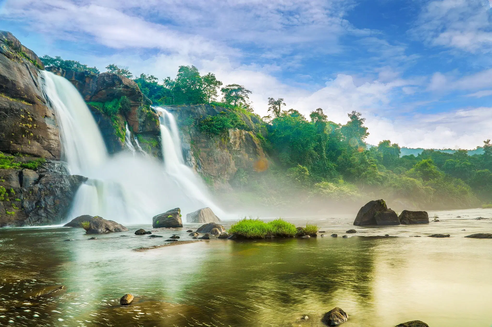

Located in the Cotigao Wildlife Sanctuary in South Goa, Kuskem Waterfalls is one of the most serene and unexplored waterfalls in the state. Its unspoiled beauty and tranquil surroundings make it a hidden gem for nature lovers and adventure enthusiasts. Highlights: • Pristine Setting: Kuskem Waterfalls is surrounded by lush greenery and dense forests, providing a peaceful and rejuvenating environment. • Seasonal Beauty: The waterfall is seasonal, which means it is at its best during the monsoon season (June to September). During this time, the water cascades down from a considerable height, creating a stunning spectacle. What to Do: • Trekking: The journey to the waterfall involves a short but adventurous trek through the sanctuary, making it a delightful experience for trekkers. • Picnics: The serene surroundings are ideal for picnics and relaxing amidst nature. How to Reach: Kuskem Waterfalls is about 12 km from Chaudi, the nearest town. You can hire a taxi or drive to the village of Kuskem, from where a short trek leads to the waterfall.
